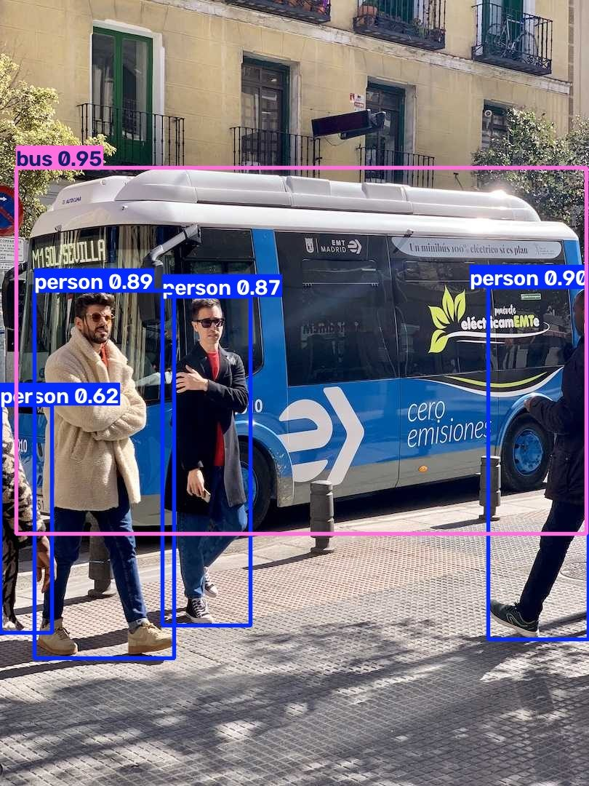
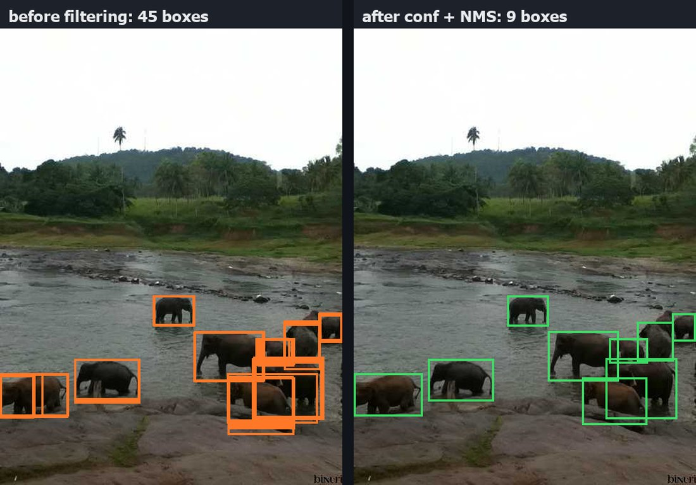
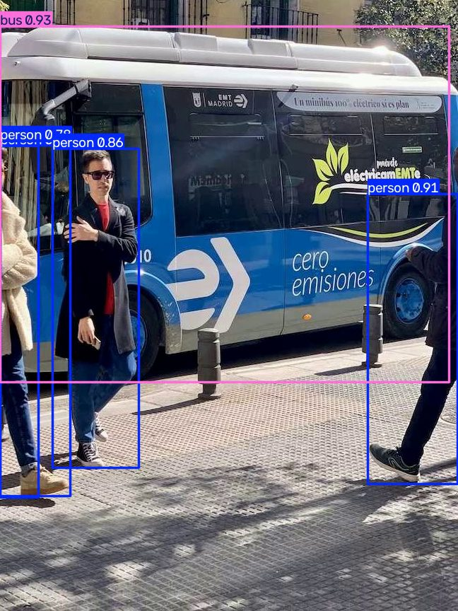
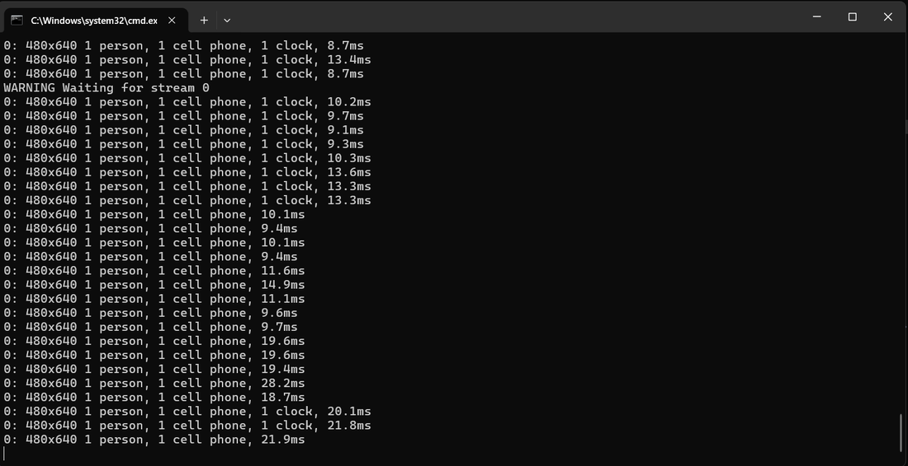
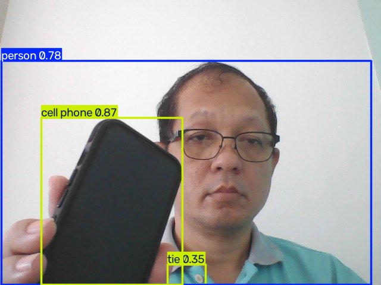

best.pt จาก Lab 1) ทำ Detection กับรูปภาพ, วิดีโอ และ Webcamruns\detect\train\weights\best.pt (ทุกสคริปต์ใน Lab นี้ชี้ไปที่ path นี้)train2, train3 ให้แก้บรรทัด set MODEL=... ในสคริปต์ให้ตรงกับโฟลเดอร์ที่ต้องการ.bat ให้เป็นสคริปต์ทุกตัวใน Lab นี้ขึ้นต้นเหมือนกัน 4 บรรทัด เข้าใจครั้งเดียวแล้วอ่านตัวอื่นออกหมด — และถ้าเข้าใจแล้วจะแก้เองได้ ไม่ต้องรอสคริปต์สำเร็จรูป
@echo off REM Lab 2 - Detect objects in an image cd /d "%~dp0\..\.." call venv\Scripts\activate.bat
| บรรทัด | ทำอะไร |
|---|---|
@echo off | ไม่ต้องพิมพ์คำสั่งเองออกมาโชว์ ให้เห็นเฉพาะผลลัพธ์ — ถ้าลบบรรทัดนี้ออกจะเห็นทุกคำสั่งที่สคริปต์รัน (มีประโยชน์เวลา debug) |
REM ... | คอมเมนต์ ไม่ถูกรัน |
cd /d "%~dp0\..\.." | บรรทัดสำคัญที่สุด — %~dp0 คือโฟลเดอร์ที่ไฟล์ .bat ตัวนี้วางอยู่ (ลงท้ายด้วย \ เสมอ) แล้ว ..\.. ถอยขึ้น 2 ชั้นไปที่ C:\dev\Yolo_tain ส่วน /d คือให้ย้ายข้ามไดรฟ์ได้ด้วยผลคือ path ที่เหลือในสคริปต์เขียนอ้างจากโฟลเดอร์หลักได้เลย และดับเบิลคลิกจากที่ไหนก็ทำงานถูกเสมอ ไม่ขึ้นกับว่าตอนนั้นอยู่โฟลเดอร์ไหน |
call venv\Scripts\ | เข้า Virtual Environment เพื่อให้เรียก yolo / python ตัวใน venv ไม่ใช่ตัวของระบบต้องมีคำว่า call นำหน้า — ถ้าเรียก .bat อีกตัวเฉย ๆ โดยไม่มี call การทำงานจะย้ายไปไฟล์นั้นแล้วไม่กลับมา บรรทัดที่เหลือจะไม่ถูกรันเลย |
pause | บรรทัดสุดท้ายของทุกสคริปต์ — ค้างหน้าต่างไว้ให้อ่านผลก่อนปิด ถ้าไม่มีบรรทัดนี้ เวลาดับเบิลคลิกหน้าต่างจะปิดวับทันทีจนอ่านอะไรไม่ทัน |
yoloทุกอย่างที่สคริปต์ทำ สุดท้ายคือการเรียกคำสั่งเดียวนี้ พิมพ์เองใน terminal ก็ได้ (หลัง activate venv แล้ว):
yolo <task> <mode> key=value key=value ...
│ │
│ └── predict / train / val / export / benchmark
└────────── detect / segment / classify / pose
Lab นี้ใช้ detect + predict ตลอด ส่วน key ที่ใช้บ่อย:
| key | ความหมาย |
|---|---|
model= | ไฟล์โมเดล .pt / .onnx ที่จะใช้ |
source= | สิ่งที่จะให้ตรวจ — ไฟล์ภาพ, ไฟล์วิดีโอ, ทั้งโฟลเดอร์, ลิงก์ URL, หรือ 0 = webcam ตัวแรก |
name= | ชื่อโฟลเดอร์ผลลัพธ์ที่จะสร้างใต้ runs\detect\ |
save=True | บันทึกภาพ/วิดีโอที่วาดกรอบแล้วลงไฟล์ (ถ้าไม่ใส่ จะประมวลผลแต่ไม่เซฟ) |
conf=0.25 | ค่าเริ่มต้น — แสดงเฉพาะผลที่มั่นใจเกิน 25% ลองปรับขึ้นถ้ากรอบขยะเยอะ ลดลงถ้าตรวจไม่เจอ |
show=True | เปิดหน้าต่างแสดงผลแบบ real-time (ใช้กับ webcam) |
device=0 / device=cpu | บังคับใช้ GPU ใบที่ 0 หรือ CPU (ปกติเลือกให้อัตโนมัติ) |
yolo cfg หรือที่ docs.ultralytics.com/modes/predictcd Lab2_Inference\scripts .\get_samples.bat
สคริปต์จะดาวน์โหลดภาพตัวอย่างและสร้างวิดีโอสั้น ๆ ไว้ในโฟลเดอร์ Lab2_Inference\samples\:
[get ] test.jpg <- https://ultralytics.com/images/bus.jpg [get ] test2.jpg <- https://ultralytics.com/images/zidane.jpg [make] test.mp4 (5s, 648x864) Sample files are in: C:\dev\Yolo_tain\Lab2_Inference\samples Press any key to continue . . .
ถ้ารันซ้ำจะขึ้น [skip] test.jpg already exists แทน เพราะสคริปต์ไม่โหลดทับของเดิม
get_samples.pyสคริปต์นี้ทำ 2 อย่าง แยกเป็น 2 ฟังก์ชัน
| download_ | วนดาวน์โหลดจาก dict IMAGES ด้วย urllib.request.urlretrieve(url, dest) — ก่อนโหลดเช็ค dest.exists() ก่อน ถ้ามีแล้วข้าม จะได้ไม่กินเน็ตซ้ำและไม่ทับไฟล์ที่นักศึกษาเปลี่ยนเอง |
| make_video() | ไม่ได้ดาวน์โหลดวิดีโอจากไหน แต่สร้างเองจาก test.jpg — ตัดกรอบขนาด 80% ของภาพแล้วเลื่อนตำแหน่งไป-กลับทีละเฟรม เขียนออกเป็น .mp4 ด้วย cv2.VideoWriter รวม 100 เฟรม (5 วินาที × 20 fps)ทำแบบนี้เพราะจะได้มีไฟล์วิดีโอไว้ทดสอบแน่นอน โดยไม่ต้องพึ่งลิงก์วิดีโอจากภายนอกที่อาจตายได้ |
จุดที่น่าสังเกตในโค้ด — path ทุกอันคำนวณจาก Path(__file__):
SAMPLES = Path(__file__).resolve().parent.parent / "samples"
__file__ คือที่อยู่ของไฟล์ .py เอง ทำให้รันจากโฟลเดอร์ไหนก็หา samples\ เจอ — เป็นวิธีเดียวกับที่บรรทัด cd /d "%~dp0\..\.." ทำในฝั่ง .bat
samples\ แล้วแก้ชื่อไฟล์ในสคริปต์ที่บรรทัด source= ได้เลย.\predict_image.bat
Ultralytics 8.4.131 Python-3.13.14 torch-2.6.0+cu124 CUDA:0 (NVIDIA GeForce RTX 3050 Ti Laptop GPU, 4096MiB) YOLO11n summary (fused): 101 layers, 2,616,248 parameters, 0 gradients, 6.5 GFLOPs image 1/1 C:\dev\Yolo_tain\Lab2_Inference\samples\test.jpg: 640x480 4 persons, 1 bus, 11.8ms Speed: 30.4ms preprocess, 11.8ms inference, 11.9ms postprocess per image at shape (1, 3, 640, 480) Results saved to C:\dev\Yolo_tain\runs\detect\predict_image
| บรรทัด | บอกอะไร |
|---|---|
CUDA:0 (...) | กำลังใช้ GPU ใบนี้อยู่ — ถ้าเห็น CPU แทน แปลว่าไม่ได้ใช้การ์ดจอ (ยังรันได้ แต่ช้ากว่ามากในแล็บที่ต้อง Train) |
YOLO11n summary (fused) | โครงสร้างโมเดล — 2.6 ล้านพารามิเตอร์, 6.5 GFLOPs ต่อภาพ ตัวเลขนี้บอกว่าโมเดล "เล็ก/เบา" แค่ไหน ใช้เทียบกันตอนเลือกขนาดโมเดลใน Lab 4 และตอนย้ายลง Raspberry Pi ใน Lab 7fused = รวมเลเยอร์ Conv กับ BatchNorm เข้าด้วยกันเพื่อให้ inference เร็วขึ้น (ทำอัตโนมัติตอนโหลดโมเดล) |
640x480 | ขนาดภาพหลังถูกย่อให้เข้ากับ input ของโมเดล ไม่ใช่ขนาดไฟล์ต้นฉบับ |
4 persons, 1 bus | ผลตรวจจับ — เจอคน 4 กับรถบัส 1 |
Speed: ... preprocess / inference / postprocess | แยกเวลาเป็น 3 ช่วง: เตรียมภาพ (ย่อ/แปลงเป็น tensor) → โมเดลคิด → แปลงผลกลับเป็นกรอบ + ตัดกรอบซ้ำด้วย NMS เวลาที่คนมักอ้างว่า "เร็วกี่ ms" คือ inference อย่างเดียว แต่ FPS จริงต้องรวมทั้ง 3 ช่วง — จุดนี้จะสำคัญมากใน Lab 6 ตอน benchmark |
Results saved to ... | โฟลเดอร์ที่ไฟล์ผลลัพธ์ถูกเซฟ |

runs\detect\predict_image\test.jpg — ตัวเลขบนกรอบคือ confidence (0-1) ยิ่งใกล้ 1 ยิ่งมั่นใจ สังเกตว่าคนที่ยืนริมซ้ายสุดถูกภาพตัดไปครึ่งตัว confidence จึงต่ำกว่าคนอื่นpredict_image.batset MODEL=runs\detect\train\weights\best.pt
if not exist "%MODEL%" (
echo [ERROR] Model not found: %MODEL%
echo Run Lab1_TrainReadyDataset\scripts\train.bat first.
pause
exit /b 1
)
if not exist "Lab2_Inference\samples\test.jpg" python "%~dp0get_samples.py"
yolo detect predict model=%MODEL% source=Lab2_Inference\samples\test.jpg name=predict_image save=True
| set MODEL= | เก็บ path โมเดลไว้ในตัวแปรเดียว แล้วเรียกใช้ด้วย %MODEL% — ถ้าจะเปลี่ยนไปใช้โมเดลอื่น (เช่นของ Lab 4) แก้แค่บรรทัดนี้บรรทัดเดียว |
| if not exist "%MODEL%" | ด่านตรวจก่อนรัน ถ้าไม่มีไฟล์โมเดลจะบอกตรง ๆ ว่าต้องกลับไปทำ Lab 1 แล้ว exit /b 1 จบสคริปต์ทันที — ถ้าไม่มีด่านนี้ Python จะพ่น traceback ยาวหลายสิบบรรทัดซึ่งอ่านยากกว่ามาก |
| if not exist test.jpg | ถ้ายังไม่มีภาพตัวอย่าง เรียก get_samples.py ให้เอง — ข้าม Step 1 มาก็ยังรันได้ |
| yolo detect predict | คำสั่งจริง ตามรูปแบบในหัวข้อ "รูปแบบคำสั่ง yolo" ด้านบน ไม่มี project= โดยตั้งใจ เพราะถ้าใส่ path แบบ relative ผลลัพธ์จะไปซ้อนกลายเป็น runs\detect\Lab2_Inference\runs\... |
อยากลองเองโดยไม่ผ่านสคริปต์ ก็ activate venv แล้วพิมพ์บรรทัด yolo ตรง ๆ ได้เลย ลองเปลี่ยน source= เป็น Lab2_Inference\samples\test2.jpg หรือเพิ่ม conf=0.5 ดูว่ากรอบหายไปกี่อัน
ตอนนี้เห็นแล้วว่าใส่ภาพเข้าไปแล้วได้กรอบออกมา — มาดูว่าระหว่างนั้นเกิดอะไรขึ้น เพราะถ้าไม่รู้ จะปรับ conf กับ iou ไม่ถูก และตอบกรรมการวันสอบไม่ได้
วิธีหาวัตถุแบบเก่า (two-stage เช่น R-CNN) ทำ 2 ขั้น: ขั้นแรกไล่หาว่า "ตรงไหนน่าจะมีของ" ได้มาเป็นพันจุด แล้วขั้นสองค่อยเอาแต่ละจุดไปถามว่า "นี่คืออะไร" — ต้องมองภาพซ้ำหลายพันครั้ง จึงช้ามาก
YOLO มองภาพครั้งเดียวจบ โดยมองเป็นตารางช่อง (grid) แล้วให้ทุกช่องทำนายพร้อมกันในรอบเดียวว่า "จากตรงนี้ มีวัตถุไหม กรอบกว้างยาวเท่าไร เป็นคลาสอะไร มั่นใจแค่ไหน" — นี่คือเหตุผลที่ YOLO เร็วพอจะรันวิดีโอสดได้ อย่างที่เห็นใน Step 3-4
สิ่งที่โมเดลพ่นออกมาดิบ ๆ ไม่ใช่ 4 กรอบสวย ๆ แต่เป็นกรอบผู้สมัครหลายพันอัน ซ้อนทับกันมั่วไปหมด เพราะวัตถุหนึ่งตัวมีหลายช่องใน grid ที่ "มองเห็น" มัน ทุกช่องก็เลยทายกรอบของตัวเองออกมา
| ชั้นที่ | ทำอะไร | พารามิเตอร์ |
|---|---|---|
| 1 | ตัดด้วยความมั่นใจ — ทิ้งกรอบที่ confidence ต่ำกว่าเกณฑ์ | conf=0.25 (ค่าเริ่มต้น) |
| 2 | NMS (Non-Maximum Suppression) — ในกลุ่มกรอบที่ทับกันเอง เก็บอันที่มั่นใจสูงสุดไว้อันเดียว ที่เหลือทิ้ง | iou=0.7 (ค่าเริ่มต้น) |

conf=0.05 iou=0.95) ขวาคือค่าเริ่มต้น (conf=0.25 iou=0.7)ขั้นตอนของ NMS ง่ายมาก ทำซ้ำจนกรอบหมด:
iou ให้ทิ้ง (ถือว่าเป็นวัตถุตัวเดียวกัน)ใช่ครับ IoU ตัวเดียวกับที่ใช้ตรวจงาน label ใน Lab 3 และวัดโมเดลใน Lab 5 — ตัววัดว่ากรอบสองอันทับกันแค่ไหน ถูกใช้ซ้ำใน 3 ที่ที่ต่างกันโดยสิ้นเชิง
| อาการ | ปรับ | ผล |
|---|---|---|
มีกรอบขยะเยอะ (เช่น tie 0.35 ที่คอเสื้อ) | conf ขึ้น เช่น 0.5 | กรอบที่ไม่มั่นใจหายไป แต่เสี่ยงพลาดวัตถุจริงที่มืดหรือเล็ก |
| ตรวจไม่เจอวัตถุที่มีอยู่ | conf ลง เช่น 0.1 | เจอมากขึ้น แต่กรอบขยะกลับมาด้วย |
| วัตถุหนึ่งตัวมีหลายกรอบซ้อน | iou ลง เช่น 0.5 | กรองแรงขึ้น แต่ถ้าวัตถุจริงยืนชิดกันมากอาจถูกกรองรวมเป็นตัวเดียว |
| วัตถุยืนชิดกันแล้วหายไปตัวหนึ่ง | iou ขึ้น เช่น 0.85 | ยอมให้กรอบทับกันได้มากขึ้น เหมาะกับฝูงสัตว์หรือของบนสายพานที่วางชิดกัน |
yolo detect predict model=runs\detect\train\weights\best.pt source=Lab2_Inference\samples\test.jpg conf=0.05 iou=0.95 name=loose save=Trueแล้วเปิดผลใน
runs\detect\loose\ เทียบกับของเดิมconf และ iou ไม่ได้ทำให้โมเดลเก่งขึ้นหรือแย่ลง — โมเดลทายเหมือนเดิมทุกอย่าง เราแค่เปลี่ยนว่าจะรับคำตอบไหนไว้บ้าง การจะให้โมเดลเก่งขึ้นจริงต้องกลับไปที่ข้อมูลและการเทรน (Lab 3-4).\predict_video.bat
วิดีโอถูกประมวลผลทีละเฟรม บรรทัดจะไหลผ่านไปเรื่อย ๆ 100 บรรทัด (1 เฟรม = 1 บรรทัด):
video 1/1 (frame 1/100) C:\dev\Yolo_tain\Lab2_Inference\samples\test.mp4: 640x480 3 persons, 1 bus, 15.5ms video 1/1 (frame 2/100) C:\dev\Yolo_tain\Lab2_Inference\samples\test.mp4: 640x480 3 persons, 1 bus, 9.1ms ... video 1/1 (frame 100/100) C:\dev\Yolo_tain\Lab2_Inference\samples\test.mp4: 640x480 3 persons, 1 bus, 8.7ms Speed: 2.0ms preprocess, 10.4ms inference, 1.6ms postprocess per image at shape (1, 3, 640, 480) Results saved to C:\dev\Yolo_tain\runs\detect\predict_video
สังเกต 2 อย่าง:
preprocess เหลือแค่ 2.0ms จาก 30ms ของภาพเดี่ยว เพราะครั้งแรกรวมเวลาโหลดโมเดลเข้า GPU ไว้ด้วย
runs\detect\predict_video\test.avi — วิดีโอนี้สร้างจากการเลื่อนกรอบไปบน test.jpg จึงเห็นคนไม่ครบ 4 คนเหมือนภาพนิ่ง เพราะบางคนถูกเลื่อนออกนอกเฟรมไปแล้วผลลัพธ์จะอยู่ที่ runs\detect\predict_video\ — บน Windows ไฟล์ที่ได้จะเป็นนามสกุล .avi (ไม่ใช่ .mp4) เปิดดูด้วย VLC หรือ Movies & TV ได้ตามปกติ
predict_image.bat ตรงไหนแทบไม่ต่างเลย — เปลี่ยนแค่ 2 คำ:
source=Lab2_Inference\samples\test.mp4 (เดิมเป็น test.jpg) name=predict_video (เดิมเป็น predict_image)
Ultralytics ดูจากนามสกุลไฟล์เองว่าเป็นภาพหรือวิดีโอ แล้วเลือกวิธีอ่านให้อัตโนมัติ — โค้ดฝั่งเราไม่ต้องเขียนลูปอ่านเฟรมเลย ถ้าใส่ source= เป็นชื่อโฟลเดอร์ มันก็จะไล่ทำทุกไฟล์ในโฟลเดอร์นั้นให้เหมือนกัน
.\predict_webcam.bat
จะมีหน้าต่างวิดีโอเปิดขึ้นมาแยกต่างหาก วาดกรอบทับภาพสดแบบ real-time ส่วนใน terminal บรรทัดจะไหลไม่หยุดจนกว่าจะกดหยุด:

predict_webcam.bat ทำงานเลข 0: ข้างหน้าคือหมายเลข source (webcam ตัวที่ 0) — ต่างจากภาพนิ่งที่ขึ้นเป็น image 1/1 เพราะกล้องเป็นสตรีมที่ไม่มีจุดจบ
| ที่เห็น | อธิบาย |
|---|---|
ผลตรวจไม่นิ่ง1 person, 1 cell phone, 1 clockสลับกับ 1 person, 1 cell phone |
คลาส clock โผล่ ๆ หาย ๆ ระหว่างเฟรม ทั้งที่ในภาพไม่มีนาฬิกา — เป็น false positive ที่ confidence วิ่งอยู่แถว ๆ เส้นแบ่ง 0.25 พอดี เฟรมไหนเกินก็โผล่ เฟรมไหนไม่ถึงก็หายYOLO ตัดสินใจใหม่ทุกเฟรมโดยไม่จำเฟรมก่อนหน้าเลย — งานจริงจึงมักต้องเพิ่มตรรกะกรองเอง เช่น ต้องเจอติดกัน 3 เฟรมถึงนับว่าเจอจริง — เก็บไว้คิดตอน Lab 9 ที่ต้องเอาผลตรวจไปสั่งมอเตอร์ เพราะถ้าสั่งตามผลดิบทุกเฟรม มอเตอร์จะกระตุกตามกรอบที่โผล่ ๆ หาย ๆ แบบนี้ |
WARNING Waiting for stream 0 |
ไม่ใช่ error — แปลว่าโมเดลประมวลผลเร็วกว่ากล้องส่งภาพมา เลยต้องรอเฟรมถัดไป เป็นสัญญาณที่ดีว่าคอขวดอยู่ที่กล้อง (30 fps) ไม่ใช่ที่ GPU |
| เวลาไม่คงที่ 8.7ms → 13.4ms → 19.6ms → 28.2ms |
เวลาต่อเฟรมแกว่งได้ 3 เท่าตัวบนเครื่องเดียวกัน เพราะ GPU ถูกงานอื่นแย่งใช้ และมี thermal throttling เวลาวัดประสิทธิภาพจึงต้องเฉลี่ยหลาย ๆ เฟรม ไม่ใช่หยิบเฟรมเดียวมาอ้าง — เป็นเหตุผลที่ benchmark.py ใน Lab 6 รันซ้ำ 20 รอบแล้วหาค่าเฉลี่ย |

predict_webcam.bat — กรอบและตัวเลขถูกวาดทับภาพสดแบบ real-time| ที่เห็น | อธิบาย |
|---|---|
person 0.78cell phone 0.87 | โมเดลรู้จัก คลาสของ COCO ทั้ง 80 คลาส ไม่ใช่แค่ person กับ bus — เพราะ best.pt ต่อยอดมาจาก yolo11n.pt ที่เทรนมาจาก COCO เต็มชุดแล้ว การ Train ใน Lab 1 แค่ปรับต่ออีกนิดเดียวด้วยภาพ 8 ใบน่าสนใจว่ามือถือได้ 0.87 สูงกว่าคนที่ 0.78 เพราะวัตถุอยู่ใกล้กล้อง ขอบชัด และไม่ถูกบัง |
tie 0.35 | นี่คือการตรวจผิด (false positive) — โมเดลเห็นคอเสื้อแล้วเดาว่าเป็นเนกไท แต่สังเกตว่า confidence ต่ำมาก (0.35) เทียบกับอีกสองอันที่ 0.78-0.87 นี่คือเหตุผลที่มีค่า conf ให้ปรับ — ลองรันด้วย conf=0.5 ดู กรอบ tie จะหายไปทันที ส่วน person กับ cell phone ยังอยู่:
yolo detect predict model=runs\detect\train\weights\best.pt source=0 show=True conf=0.5 |
conf สูง ส่วนงานที่ยอมให้ผิดพลาดได้บ้างแต่ห้ามพลาดของจริง ควรตั้งต่ำq ในหน้าต่างวิดีโอเพื่อหยุดการทำงาน — ต้องคลิกที่หน้าต่างวิดีโอก่อนให้มันเป็นหน้าต่าง active กดใน terminal ไม่มีผล (ถ้าไม่ได้จริง ๆ กด Ctrl+C ใน terminal)yolo detect predict model=%MODEL% source=0 show=True
| source=0 | เลข 0 เฉย ๆ (ไม่ใช่ชื่อไฟล์) = กล้องตัวแรกของเครื่อง ถ้ามีหลายตัวลองเปลี่ยนเป็น 1, 2 |
| show=True | เปิดหน้าต่างแสดงผลสด — จำเป็นสำหรับ webcam ไม่งั้นจะประมวลผลไปเงียบ ๆ โดยไม่เห็นอะไรเลย |
| ไม่มี save=True | ตั้งใจไม่เซฟ เพราะสตรีมจากกล้องไม่มีจุดจบ ถ้าเปิด save ไว้ไฟล์จะโตขึ้นเรื่อย ๆ จนกว่าจะกดหยุด — ถ้าอยากอัดเก็บไว้จริง ๆ ค่อยเติม save=True เอง |
ดูตัวอย่างการดึงค่า box/class/confidence แบบ Python ล้วนได้ที่ scripts\read_results.py รันด้วย:
python read_results.py
หัวใจของโค้ดคือ 3 บรรทัดนี้ — ที่เหลือคือการวนอ่านค่าออกมา:
from ultralytics import YOLO
model = YOLO("runs/detect/train/weights/best.pt")
results = model("Lab2_Inference/samples/test.jpg")
for r in results:
for box in r.boxes:
print(model.names[int(box.cls[0])], float(box.conf[0]), box.xyxy[0].tolist())
ตัวอย่าง output ที่ได้จริง:
class=bus conf=0.95 box=(22,230,807,733) class=person conf=0.90 box=(671,394,810,878) class=person conf=0.89 box=(48,400,240,904)
box.cls — class id (ตัวเลข) แปลงเป็นชื่อคลาสด้วย model.names[...]box.conf — confidence 0-1 ยิ่งใกล้ 1 ยิ่งมั่นใจbox.xyxy — พิกัดกรอบ (x1,y1) มุมบนซ้าย และ (x2,y2) มุมล่างขวา หน่วยเป็นพิกเซล| อาการ | วิธีแก้ |
|---|---|
[ERROR] Model not found: runs\detect\train\weights\best.pt |
ยังไม่ได้ Train ใน Lab 1 หรือลบ runs\ ไปแล้ว — กลับไปรัน Lab1_TrainReadyDataset\scripts\train.bat ก่อน |
| รันสคริปต์ซ้ำแล้วผลลัพธ์ไม่อยู่ที่โฟลเดอร์เดิม | เหมือน Lab 1 คือ YOLO ไม่เขียนทับ แต่สร้าง predict_image2, predict_image3 ... เพิ่มให้ ดูโฟลเดอร์ล่าสุดเสมอ |
| ดาวน์โหลดภาพตัวอย่างไม่ได้ | เป็นปัญหาอินเทอร์เน็ต — คัดลอกรูปอะไรก็ได้มาตั้งชื่อ test.jpg ไว้ใน Lab2_Inference\samples\ แทน แล้วรัน get_samples.bat ซ้ำเพื่อสร้างวิดีโอ |
| หน้าต่าง Webcam ขึ้นมาแต่ภาพดำสนิท ไม่มี error ใด ๆ | สาเหตุที่พบบ่อยที่สุดคือ โปรแกรมแอนตี้ไวรัสบล็อกเว็บแคมอยู่ (Kaspersky มีฟีเจอร์ "การป้องกันเว็บแคม / Webcam Protection", Norton, Bitdefender และ ESET ก็มีคล้ายกัน) — มันไม่บล็อกการเปิดกล้อง แต่บล็อกภาพ เลยไม่มี error ให้เห็น ได้แค่จอดำ ให้กด อนุญาต / Allow ที่ pop-up มุมขวาล่าง หรือถ้าไม่มี pop-up ให้เข้าไปเพิ่มข้อยกเว้นเองที่ Settings → Privacy → Webcam Protection โดยอนุญาต ทั้งสองไฟล์: venv\Scripts\yolo.exe (ตัวที่ .bat เรียก) venv\Scripts\python.exe (ตัวที่สคริปต์ .py เรียก)แอนตี้ไวรัสมองว่าเป็นคนละแอป ถ้าอนุญาตแค่ตัวเดียวอีกตัวจะยังดำอยู่ |
| เปิด Webcam แล้วค้างนาน / 2-3 วินาทีแรกภาพยังดำ | ปกติของกล้อง USB — ต้องใช้เวลาเริ่มทำงานและปรับแสงอัตโนมัติ บนเครื่องทดสอบใช้เวลาเปิดครั้งแรกราว 10 วินาที และเฟรมช่วง 5 วินาทีแรกยังดำอยู่ ก่อนภาพจะมาปกติ อย่าเพิ่งกดปิด |
| Webcam ไม่ขึ้นภาพ / ค้าง (กรณีอื่น ๆ) | เช็คตามลำดับ: ฝาปิดเลนส์ (privacy shutter) เลื่อนปิดอยู่หรือไม่ → ปุ่ม Fn ปิดกล้องบนคีย์บอร์ด → มีโปรแกรมอื่นยึดกล้องอยู่ (Teams, Zoom, แอป Camera) ให้ปิดก่อน → ถ้ามีกล้องหลายตัวให้แก้ source=0 เป็น source=1 ในสคริปต์ทดสอบแยกได้ด้วยแอป Camera ของ Windows — ถ้าในแอปนั้นก็ดำ แปลว่าไม่เกี่ยวกับสคริปต์ Lab |
| โมเดลตรวจเจอแค่ไม่กี่คลาส | ปกติ — best.pt จาก Lab 1 เทรนบน COCO8 (แค่ 8 ภาพ) จึงเก่งเฉพาะคลาสที่เคยเห็น เช่น person/bus; จะได้โมเดลที่ตรงงานจริงใน Lab 3-4 |
test.jpg ตรวจเจอ 4 persons, 1 bus ที่ ~12 ms/ภาพ, วิดีโอ 100 เฟรมประมวลผลจบภายในไม่กี่วินาที และ Webcam (USB2.0 HD UVC, 640x480) ตรวจเจอ person ที่ confidence 0.90 ใช้เวลา inference 8.8 ms/เฟรม — หลังปลดบล็อกเว็บแคมใน Kaspersky แล้วread_results.py